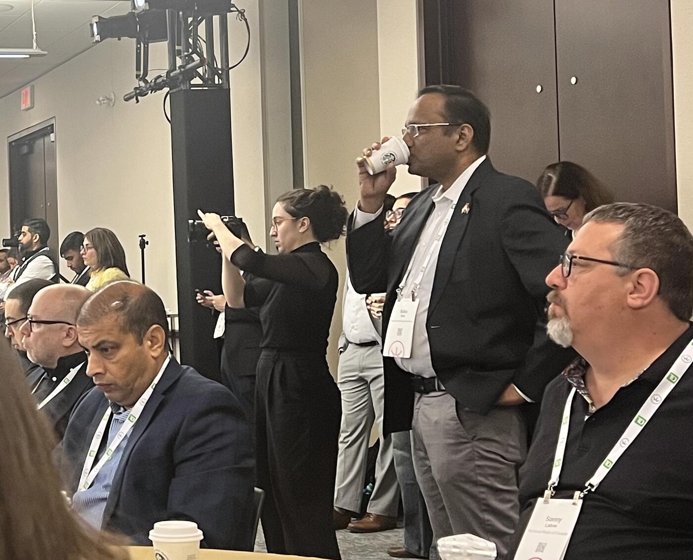

Framing: From Experimentation to Delivery
The panel opened with moderator Kellie Johnson framing the urgency facing the payments industry. She emphasized that financial services are already among the leaders in AI adoption and that the conversation has now moved beyond experimentation.
"We wanted to really dig into some of the hard conversations. The question isn't whether AI belongs in payments, it's how we're actually going to deliver."
Johnson noted the pace of change:
"We've been saying for years that the rate of change in payments has never been this fast and it's never gonna be this slow again. Everything that we do, it gets harder and harder all of the time."
She introduced Vicky Wang as "the person figuring out how to get 11,000 financial institutions to share intelligence and adopt shared innovative solutions," Matt Loos as the executive overseeing payment reliability and one of Scotiabank's largest modernization efforts, and Mohneet Gujral as someone leading modernization shaping Citi's evolving payments strategy in Canada.
Mohneet Gujral (Citi): AI in the Real-Time Rail Build

The discussion began with a direct question to Gujral about which AI application in payments had most surprised her in terms of impact or speed to production.
"It has actually amazed me how quickly we have incorporated AI into the product development lifecycle."
Using Citi's Real-Time Rail work as an example, she explained that AI is now embedded throughout the development process, while still maintaining "a human in the loop":
"AI is ingesting vast amounts of documentation to translate RTR rules to design specifications and business requirements. This ability of AI to work with large amounts of complex regulatory and technical documentation has been efficient and already delivering a lot of results."
She described how Citi uses AI to compare new Canadian RTR requirements against its existing global infrastructure through Citi Payment Express, the bank's cloud-native, high-availability, low-latency payment processor that already supports instant payment rails in more than 20 countries.
"AI can do this very easily, compare and map what the requirements are versus what's already there in the global infrastructure, giving insights on alignment, critical gaps, what requires adaptation. So you are able to get insights into your readiness. And this was genuinely surprising in terms of impact and speed."
Beyond requirements analysis, AI is being applied across the SDLC:
- Agile planning: "We're using AI to automate a vital part of agile planning, which is writing epics."
- Coding: All developers now have access to AI-assisted coding tools generating complex code directly from business requirements — "they are increasing development velocity."
- Testing: Generating comprehensive test cases, including hard edge cases. "Testing is comprehensive."
- Cybersecurity: AI-driven approaches to strengthen network security: "Hopefully, if that works out, it actually happens quite silently and nobody actually knows, but as a result, the network is stronger."
Matt Loos (Scotiabank): AI Has Always Been Here
Loos explained that AI is no longer running parallel to infrastructure transformation efforts but has become embedded directly into them.
"I think it's definitely been embedded now, firm-wide. Everybody who works at a bank here, you're modernizing some part of your ecosystem in some way."
"The payments industry has actually been using AI for decades. We didn't call it AI. We called it machine learning."
"All we've done with the power of computing and the power of data, it's allowed to ingest a lot more data and make those machine learning type decisions very quickly with more models, models on top of models."
He highlighted agentic AI as transformative for non-technical teams:
"It allows product people to do things at a scale and pace that's quite different."
He contrasted this with older waterfall delivery — "I've got to write a business requirement document, we all review it, there's a technical spec document… and then, all right, see you in nine months." Most banks, he said, are still in a "fragile phase" somewhere between waterfall and true agile.
"You can't just do this and hope and think it's all going to work out. We've got to be very careful how you implement it, how you use it, and how you govern it."
The 20% Problem
Johnson referenced industry research: only around 20% of AI pilots successfully scale into production, dropping closer to 15% in regulated sectors such as payments. She asked Loos where the biggest barriers are.
His advice was the opposite of "go find a new AI use case":
"Don't think about something you don't do today that you now want to use AI to do. Think about something you do today that you could improve or enhance with AI."
To illustrate, he told a story of an early-career CEO who refused to trust an Excel spreadsheet because the totals "didn't look right," despite the calculations being correct.
"I think that's sort of where we are in some of our senior leadership with AI. I don't trust it."
"If you're going to have a use case, find one where you can show, this was the result without AI, and here's the result with AI, which should be better or the same, and we just got there faster."
The Repair Report Example
As a practical example, Loos described Scotiabank's work around payment repair processing. The bank partnered with Microsoft and UiPath on a proof of concept using agentic AI to automate repair analysis and reporting workflows.
Traditionally, creating a repair report for a client required extensive manual data cleanup — approximately 18 hours per single client report.
Using multiple AI agents, Scotiabank automated different stages:
- One agent cleaned transaction data
- A second interpreted repair reasons using procedural documentation
- A third generated the final report
"What we showed within a very quick period of time… was that it could replicate the manual report, do it at pace and speed."
One of the most interesting outcomes: the AI system independently suggested a new repair-reason classification after identifying patterns across existing categories.
"The agent in the middle actually recommended a new reason code. That's where it starts thinking."
Citi's Five-Pillar AI Framework
Returning to Gujral, she outlined Citi's global AI deployment framework — five interconnected pillars:
- Sales assist
- Client assist
- Agent assist
- Ops assist
- Tech assist
"The reason for this framework is to ensure that we're not just delivering client value, we're also generating operational efficiencies across the board."
One of Citi's most successful production deployments has been Citi Agent Assist, an AI-powered platform launched in November of last year that is already operating in more than 72 countries.
"It is providing agents with access to comprehensive data to respond to customer queries in near real time."
She acknowledged many AI POCs never reach production. The biggest obstacles:
- Data quality and governance. "What necessarily works for a small curated data set might not work when you need data which is clean, accessible, properly governed."
- Value erosion. "The projected value when you start a POC sometimes can decay as you go through the POC and you analyze the results."
Vicky Wang (SWIFT): Risk vs. Benefit at the Network Level
"It's about evaluating risk and benefits."
Wang contrasted two SWIFT initiatives:
1. AI Address Structuring Tool (lower-risk): Released open source for ISO 20022 migration. By the April survey, hundreds of banks — approaching 1,000 institutions — had downloaded the tool and were using it as their preferred solution.
"It's an AI tool, by the way. That's the first tool of choice when it comes to nicely structured address."
2. Secure Data Collaboration / Cross-Border Fraud Detection (high-risk):
"That one is a very heavy footprint exercise."
This required legal and regulatory review across 9 separate jurisdictions covering privacy, AI regulation, and cross-border legal requirements.
"We started in 2023, and just this year we're transitioning into a pilot."
Why so slow? Because the methodology itself must be protected:
"If the AI fraud detection tool falls into the unwanted hands of the wrong people, in two days it's not going to detect anything. Because the players are going to know what you're trying to detect."
"It's not about AI. It's about your subject matter expertise in the AI format."
Data, Data, Data
Johnson asked Loos where Scotiabank sees the strongest returns from AI.
"You can't talk about AI without talking about data."
Address validation has emerged as one of the most practical use cases — Scotiabank layers multiple AI systems so that if one model fails to structure or validate data, another tries before manual repair.
"Think about where you do have data problems, where you don't have data consistency. AI can just help you clean the data up."
"Everything we do in payments and transactions is all about data. Really all we're doing is moving data in an electronic way."
He contrasted old vs. new AI architecture:
"The old way was you had one data set and you had one model. The new world is you can have multiple data sets and multiple models, and they can all work together to come to a better conclusion."
"You can put AI in the middle somewhere and take data from 20 different systems."
Build vs. Buy — and the Coming Commoditization
Gujral described Citi's three core objectives: stay at the forefront of digital innovation, serve clients more effectively, and increase efficiency/standardization. "Delivering client value has always been the North Star."
Decision criteria:
- Build when it's a unique differentiator, core infrastructure, or proprietary
- Buy for foundational capabilities, highly specialized components, or rapid time-to-market
- Hybrid in many cases
Loos's prediction:
"The one thing AI is going to do, it's going to level the playing field very quickly."
Many products and services that once differentiated institutions may soon become heavily commoditized as AI capabilities become broadly accessible.
"It's going to be very interesting as we move forward in this AI world… What is going to be the new difference? It's going to be much harder to tell that differentiation."
"My gut is it's going to be a lot more partners."
Where SWIFT Plays vs. Where Banks Play
Wang explained SWIFT's role: network-level — interoperability, standardization, identity, infrastructure resilience, and secure global connectivity.
"For SWIFT, we always stay on the network. We're all about the network, the rails, the standardization, identity, interoperability."
Cross-border financial crime is particularly hard because legislation and regulation is opaque across jurisdictions.
"Ultimately, that's what we focus on. So that we can enable our partners, our members, to focus on what you focus on best, which is commercial customer relationships and offering them your proprietary models and tailored products and services."
Loos agreed — and added a stark warning:
"The reality is all the fraudsters are using AI. They're probably 20 steps ahead of us on AI."
"If they know exactly what our tool is going to do, then before you know it, that tool becomes completely useless."
Wang:
"They collaborate. That's a free-for-all."
Governance: 60–70% of AI Failures
Johnson noted that 60–70% of AI initiatives fail because of governance, risk, or data-related challenges. In regulated industries, finding the right balance is especially hard.
Scotiabank's Approach (Loos)
"At Scotiabank, we've created a top-down AI governance quite recently."
Anyone can submit an idea through centralized intake. The goal is to prevent duplication: "This group's doing AI over here. This group's doing AI over here. They're not talking to each other."
Loos described the problem of AI initiatives being trapped inside traditional "model governance" frameworks designed for capital markets:
"We were just trying to do simple repair AI, and it got caught up in this, 'Well, what happens if it goes wrong?'"
He distinguished between low-risk operational AI (e.g., payment repair) and high-risk financial decisioning AI (e.g., lending models, where bias is critical).
"The model that's going to repair a transaction, what's it going to be biased against?"
"We're bankers with a risk-first mindset. If you're not thinking about what's the worst-case scenario, you've already failed."
Wang's Race-Car Analogy
"Governance for AI is like the brakes on race cars. On the surface, it's to slow you down, but it slows you down where you have to slow down or else you'll flip over. Ultimately, it enables you to go fast."
SWIFT: Front-Loaded Decisions
"If we have an AI use case, because we've already mapped out the considerations for different data classification, if you have highly confidential data and you want to run an AI model, that has to stay on-prem in a certain DMZ zone, that's already there."
By predefining deployment patterns by data classification, SWIFT avoids "analysis paralysis" per use case.
"If it's this data classification, go to the DMZ. If it's open or restricted data, then you can have a cloud instance."
"You have to go through that to know the issue that is, for now it's not an issue, it's going to be an issue later on. And address those concerns and make that decision as a standard."
Citi: Human-in-the-Loop, Lifecycle-Wide
Citi's AI risk management is embedded inside enterprise risk management.
"The reason for that is to establish an enterprise-wide approach for AI-related risk management."
"No matter what happens, AI is generating insights, AI is automating processes, at the end of the day, a human is always responsible for strategic decision-making."
"My neck is always on the line, no matter how much AI can help me."
"Governance doesn't end at the lifecycle. It also has to continue post-deployment."
Citi's approach in one phrase: "human-led governance across the lifecycle and continuous performance monitoring."
Rapid-Fire: What's Underestimated Right Now?
Wang — Cross-Border Financial Crime
"We've been really stunned by the level of financial crime. How sophisticated they're able to deploy AI to defraud everybody."
"So long as they move something out of the institution, out of the border, all of a sudden it becomes invisible."
"By force or by choice, in a couple of years we'll have to get together and address that issue."
Gujral — Agentic Commerce
"Agentic e-commerce is a big wave of change and not everybody is ready for it."
"It's going to fundamentally change e-commerce. It's going to change how consumers engage with platforms."
"Imagine an infrastructure that works for human-based transactions will have to adapt to agentic-based commerce."
"There could be very interesting trends, probably the re-emergence of wallet providers."
Loos — System Modernization
"I'm going to talk about the most exciting thing that everybody always gets amped up about, which is system modernization." (joking)
"AI is going to level the playing field, and it's really going to allow you to accelerate what used to be a very painful process of updating."
"It's going to make us much more effective and efficient and allow us to sort of clone some of those system subject matter experts at scale."
"Any of us now, you can use AI pretty quickly to become an expert on something you knew nothing about."
Key Takeaways
- AI now embedded across Citi's RTR build: requirements translation, epic writing, code generation, comprehensive test coverage, cyber.
- Citi Payment Express supports instant rails in 20+ countries; Citi Agent Assist is live in 72+ countries.
- Scotiabank/Microsoft/UiPath repair-report POC: 18-hour manual job compressed using 3-agent pipeline; the middle agent surfaced a new repair reason code.
- "Don't AI a new thing. AI an existing thing you can benchmark against."
- 20% of AI pilots reach production; ~15% in payments. Data quality and value-decay are the top killers.
- SWIFT's AI address-structuring tool reached ~1,000 banks as preferred ISO 20022 solution.
- SWIFT's secure cross-border fraud collaboration: 9 jurisdictions of legal review, started 2023, only now piloting — because exposing detection methodology is itself a risk.
- 60–70% of AI failures are governance/risk/data, not technology.
- Wang's analogy: "Governance for AI is like the brakes on race cars."
- "We're bankers with a risk-first mindset. If you're not thinking about worst-case, you've already failed."
- Hot warning: "All the fraudsters are using AI. They're probably 20 steps ahead of us."
- AI will commoditize differentiation — partnerships are the next moat.
- Underestimated 2-year trends: cross-border AI-driven financial crime, agentic commerce + wallet re-emergence, AI-accelerated legacy modernization.